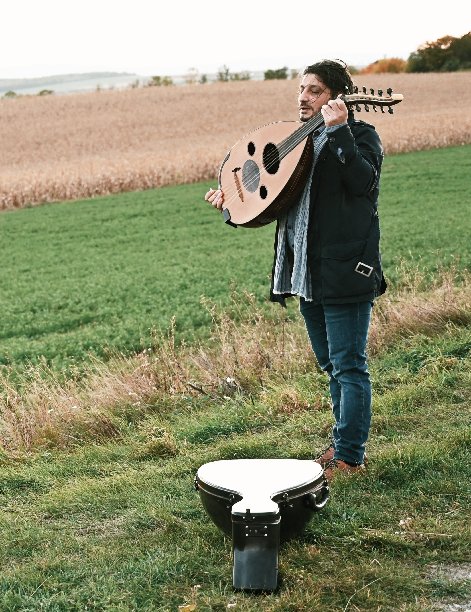
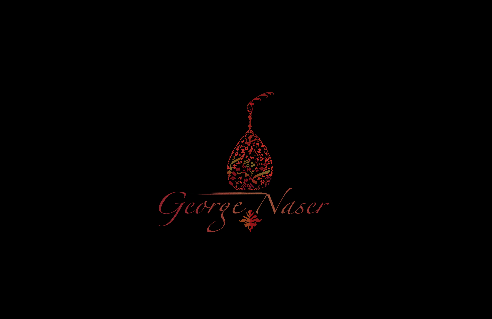
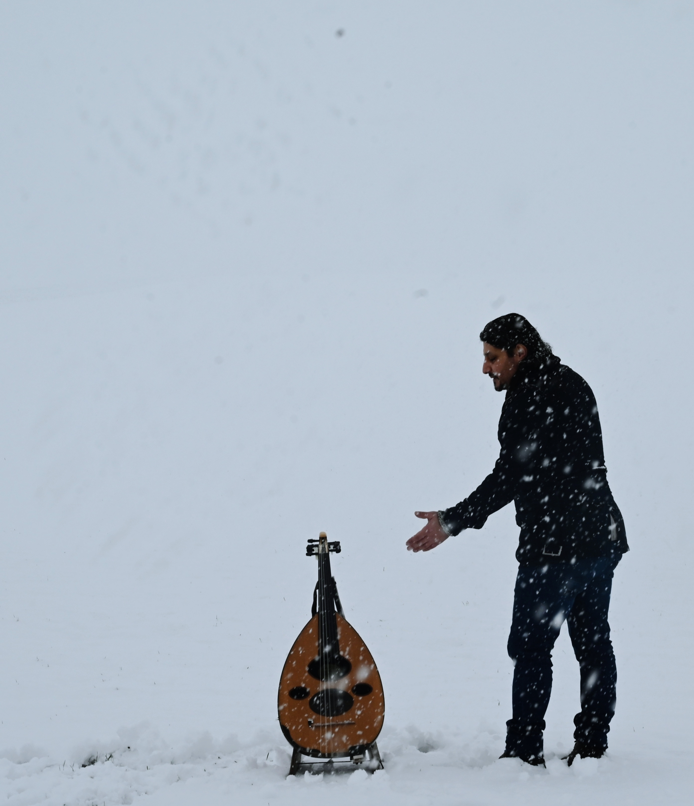

Music
Performance, musical expression, composition, arrangement and production.
PERFORMANCE · PRODUCTION
MUSICIAN · AUDIO ENGINEER · AUDIO DEVELOPER

A creative practice shaped by musical expression, audio engineering and the development of tools and instruments for sound.
Discover more↓A musician’s ear. An engineer’s mind. A curiosity for what sound can become.
ABOUT
01 / 04
GN.I am George Naser — a musician with a passion for audio engineering, music production and the technology that opens new creative possibilities. My work moves between musical expression, sound production and the development of audio tools and virtual instruments.
This is my personal space for music, sound and the projects I create.
FIELDS
02 / 04Different disciplines, connected by one focus: creating, understanding and shaping sound.
Performance, musical expression, composition, arrangement and production.
PERFORMANCE · PRODUCTIONRecording, editing, mixing and mastering — with attention to detail, balance and sonic character.
RECORDING · MIXING · MASTERINGAudio plugins, equalizers, virtual instruments and sample-based tools for musical creativity.
PLUGINS · INSTRUMENTS · TOOLSWATCH & EXPLORE
SELECTED VIDEOSA selection of videos on oriental music theory, notation software and virtual instrument development.
Exploring oriental scales using Sibelius notation software.
Watch on YouTube ↗A practical look at oriental scales in Finale.
Watch on YouTube ↗Discovering oriental scales in MuseScore.
Watch on YouTube ↗Working with oriental scales in Dorico notation software.
Watch on YouTube ↗An introduction to a custom virtual instrument developed for Kontakt.
Watch on YouTube ↗PROJECTS
03 / 04A growing collection of musical, technical and creative work — shared as each project is ready.
Exploring the sound and expressive possibilities of the oud through sampling, instrument design and Kontakt development.
Explore the project↗A custom instrument concept created for expressive musical exploration.
Discover SOUL↗CONNECT
04 / 04For conversations, collaborations or simply to connect around music, audio and creative technology.
george-naser@outlook.at ↗ InstagramSelect the email address to write to me, or visit my Instagram profile.